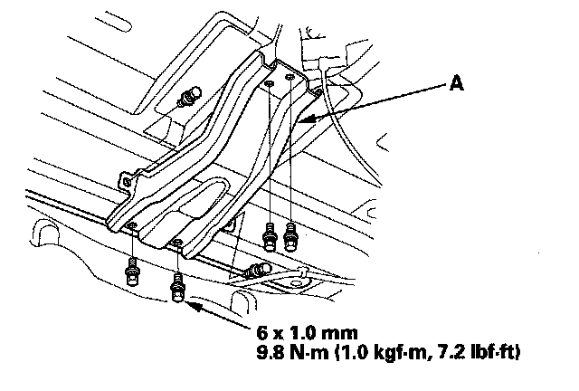
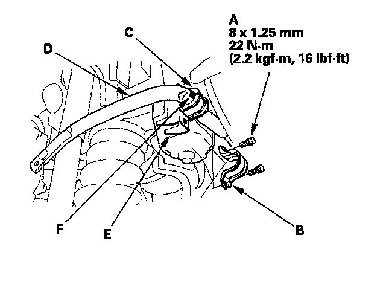

Rear Suspension
Stabilizer Bar Replacement1. Raise the rear of the vehicle, and support it with safety stands in the proper locations.
2. Remove the rear wheels.
3. Remove the spare tire from the vehicle.
4. Remove the spare tire support bracket (A).

5. Disconnect both stabilizer links from the stabilizer bar.
6. Remove the flange bolts (A) and the bushing holders (B) then remove the bushings (C) and the stabilizer bar (D) from the front suspension subframe (E).
NOTE: Align the paint marks (F) on the stabilizer bar with the sides of the bushings during reassembly.

7. Install the stabilizer bar in the reverse order of removal, and note these items:
^ Note the right and left direction of the stabilizer bar.
^ Note the fore/aft direction of the bushing holders.
^ Refer to stabilizer link removal/installation to connect the stabilizer bar to the links.
^ Clean the mating surface of the brake disc/drum the inside of the wheel, then install the rear wheel.
^ Check the wheel alignment, and adjust it if necessary.